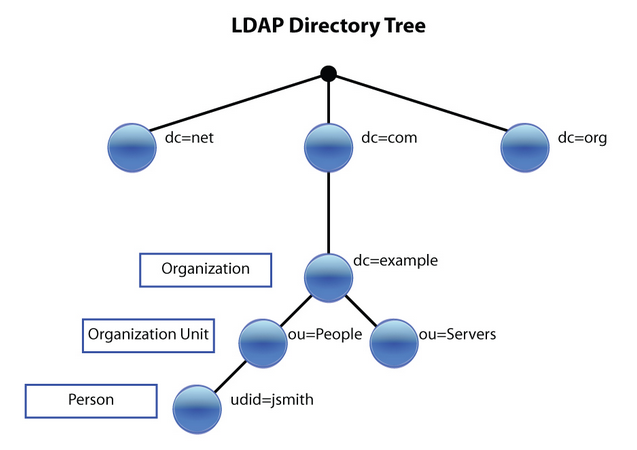

LDAP#
¿Qué es LDAP?#
LDAP es un protocolo que ofrece el acceso a un servicio de directorio implementado sobre un entorno de red, con el objeto de acceder a una determinada información. Puede ejecutarse sobre TCP/IP o sobre cualquier otro servicio de transferencia orientado a la conexión.
LDAP son las siglas en inglés de Lightweight Directory Access Protocol (Protocolo Ligero de Acceso a Directorios) y podemos considerarlo como un sistema de almacenamiento de red (normalmente construido como una base de datos) al que se pueden realizar consultas.
¿Qué es OpenLDAP?#
OpenLDAP es un desarrollo del protocolo LDAP, implementado con la filosofía del software libre y código abierto. El proyecto OpenLDAP se inició en agosto de 1998 y está sustentado por una entidad sin ánimo de lucro llamada OpenLDAP Foundation, creada por el desarrollador estadounidense Kurt D. Zeilenga para coordinar las actividades del proyecto.
¿Cómo funcionan LDAP y OpenLDAP?#
El modelo de información de LDAP se basa en entradas, entendiendo por entrada un conjunto de atributos identificados por un nombre global único (Distinguished Name – DN), que se utiliza para identificarla de forma específica. Las entradas se organizan de forma lógica y jerárquica mediante un esquema de directorio, que contiene la definición de los objetos que pueden formar parte del directorio.
Entre los atributos que suelen emplearse habitualmente, encontramos los siguientes, aunque puede haber muchos más:
uid (user id): Identificación única de la entrada en el árbol.
objectClass: Indica el tipo de objeto al que pertenece la entrada.
cn (common name): Nombre de la persona representada en el objeto.
givenname: Nombre de pila.
sn (surname): Apellido de la persona.
o (organization): Entidad a la que pertenece la persona.
ou (organizational unit): El departamento en el que trabaja la persona.
mail: dirección de correo electrónico de la persona.

Instalación del servidor LDAP#
Puedes seguir los pasos para Ubuntu Server 26.04 LTS, también verlo en los vídeos [1]
apt-get install slapd ldap-utils -y
# Contraseña del administrador: alumno
# Si no entra en la configuración y necesitamos reconfigurarlo
dpkg-reconfigure slapd
# ¿Desea omitir la configuración del servidor OpenLDAP? : NO
# Introduzca el nombre de dominio DNS: : ldap.tunombre.local
# organización : tunombre
# Contraseña del administrador: alumno
# ¿Desea que se borre la base de datos cuando se purgue el paquete slapd? No
# ¿Desea mover la base de datos antigua? Yes
Puedes chequear que se ha creado tu LDAP utilizando el comando:
ldapsearch -xLLL -b "dc=ldap,dc=tunombre,dc=local"
Crear la estructura del directorio#
Una vez configurado el servidor, deberemos configurar la estructura básica del directorio. Es decir, crearemos la estructura jerárquica del árbol (DIT – Directory Information Tree).
Una de las formas más sencillas de añadir información al directorio es utilizar archivos LDIF (LDAP Data Interchange Format). En realidad, se trata de archivos en texto plano, pero con un formato particular que debemos conocer para poder construirlos correctamente
El formato básico de una entrada es así:
# comentario
dn: <nombre global único>
<atributo>: <valor>
<atributo>: <valor>
...
<atributo> puede ser un tipo de atributo como cn o objectClass, o puede incluir opciones como cn;lang_en_US o userCertificate;binary.
Entre dos entradas consecutivas debe existir siempre una línea en blanco. Si una línea es demasiado larga, podemos repartir su contenido entre varias, siempre que las líneas de continuación comiencen con un carácter de tabulación o un espacio en blanco.
Por ejemplo, las siguientes líneas son equivalentes:
dn: uid=alumno1, ou=ldap, dc=tunombre, dc=local
dn: uid=alumno1, ou=ldap,
dc=tunombre, dc=local
Vamos insertar los siguientes objetos en el LDAP
$ cat tunombre.ldif
dn: ou=usuarios, dc=ldap, dc=tunombre, dc=local
objectClass: organizationalUnit
ou: usuarios
dn: ou=grupos,dc=ldap, dc=tunombre, dc=local
objectClass: organizationalUnit
ou: grupos
Añadimos la información a la base de datos OpenLDAP. Con el comando ldapadd:
ldapadd -x -D cn=admin,dc=ldap,dc=tunombre,dc=local -W -f tunombre.ldif
Para comprobar que todo está bien, podemos ejecutar:
ldapsearch -xLLL -b "dc=ldap,dc=tunombre,dc=local"
Para añadir un grupo
$ cat grupo.ldif
dn: cn=GA,ou=grupos,dc=ldap,dc=tunombre,dc=local
objectClass: posixGroup
cn: GA
gidNumber: 501
Para añadir la información al ldap
ldapadd -x -D cn=admin,dc=ldap,dc=tunombre,dc=local -W -f grupo.ldif
Para añadir nuevos usuarios
$ cat usuarios.ldif
dn: uid=tunombre1,ou=usuarios,dc=ldap,dc=tunombre,dc=local
objectClass: inetOrgPerson
objectClass: posixAccount
objectClass: shadowAccount
uid: tunombre1
sn: sntunombre1
givenName: tunombre1
cn: tunombre1
displayName: tunombre1
uidNumber: 1011
gidNumber: 501
userPassword: {SSHA}scgy2TQOZ87Z+Uaorx7N06U5beWV83wp
loginShell: /bin/bash
homeDirectory: /home/tunombre1
shadowExpire: -1
shadowFlag: 0
shadowWarning: 7
shadowMin: 8
shadowMax: 999999
shadowLastChange: 10877
mail: tunombre1@ldap.tunombre.local
postalCode: 28027
Para obtener la contraseña en el campo userPassword hemos utilizado el comando:
slappasswd -h {SSHA} -s "alumno"
{SSHA}scgy2TQOZ87Z+Uaorx7N06U5beWV83wp
└──┬─┘└──────────────┬───────────────┘
│ │
│ └─ 32 caracteres (Salt 4B + Hash SHA-1 20B en Base64)
│
└─ 6 caracteres (Indicador del algoritmo)
Esta representación de tu contraseña "alumno" está en un formato seguro que OpenLDAP y PAM pueden entender para la autenticación, donde {SSHA} indica el algoritmo de hash utilizado (Salted SHA-1) y el resto son 20 bytes de hash SHA-1 más 4 bytes de "salt" codificados en Base64. La salt es un valor aleatorio que se añade a la contraseña antes de aplicar el hash, lo que garantiza que dos personas con la misma contraseña generen hashes completamente diferentes. Fíjate cómo a continuación generamos para la misma contraseña "alumno" formas encriptadas diferentes, por ejemplo:
root@compute-0-0:~# slappasswd -h {SSHA} -s "alumno"
{SSHA}entsD+PtS9fMtrqd59nVWECpLuKpGVsO
root@compute-0-0:~# slappasswd -h {SSHA} -s "alumno"
{SSHA}8zTZZQ8ThqYYW0auVDt6pwaYXP+glf/W
Para cargar el nuevo usuario en el directorio.
ldapadd -x -D cn=admin,dc=ldap,dc=tunombre,dc=local -W -f usuarios.ldif
Cuando añadas nuevos usuarios, recuerda que los valores para los atributos uidNumber y homeDirectory deben ser diferentes para cada usuario.
Lo mismo ocurre con el atributo gidNumber de los grupos.
Además, los valores de los campos uidNumber y gidNumber no deben coincidir con el UID y GID de ningún usuario y grupo local.
Ahora podemos comprobar que el contenido anterior se ha añadido correctamente. Para lograrlo podemos utilizar, por ejemplo, el comando ldapsearch , que nos permite hacer una búsqueda en el directorio.:
ldapsearch -xLLL -b "dc=ldap,dc=tunombre,dc=local" uid=tunombre1
Otra opción interesante para comprobar el contenido del directorio es utilizar el comando slapcat. Su cometido es mostrar el contenido completo del directorio LDAP. Además, esta información se obtiene en formato LDIF, lo que nos permitirá volcarla a un fichero y exportar la base de datos de un modo muy sencillo.
Editar Objetos:
$ cat change.ldif
dn: uid=tunombre4,ou=usuarios,dc=ldap,dc=tunombre,dc=local
changetype: modify
replace: uidNumber
uidNumber: 1014
$ ldapmodify -x -D cn=admin,dc=ldap,dc=tunombre,dc=local -f change.ldif -W
Añadir Objetos:
$ cat add.ldif
dn: uid=tunombre4,ou=usuarios,dc=ldap,dc=tunombre,dc=local
changetype: modify
add: homePhone
homePhone: 1234567
$ ldapmodify -x -D cn=admin,dc=ldap,dc=tunombre,dc=local -f add.ldif -W
Para borrar por ejemplo el objeto tunombre1 :
ldapdelete -x -W -D "cn=admin,dc=ldap,dc=tunombre,dc=local" "uid=tunombre1,ou=usuarios,dc=ldap,dc=tunombre,dc=local"
Cuando lo borramos, aunque no aparezca nada, si hacemos un ldapsearch veremos que no está
ldapsearch -xLL -b "dc=ldap,dc=tunombre,dc=local" uid=tunombre1
Para hacer copias de seguridad y restaurarlas utilizamos:
$ slapcat -l backup.ldif #hacemos un backup
#borramos los usuarios, por error ...
sudo ldapdelete -x -W -D "cn=admin,dc=ldap,dc=tunombre,dc=local" "uid=tunombre1......,ou=usuarios,dc=ldap,dc=tunombre,dc=local"
systemctl stop slapd.service #antes de restaurar paramos el servicio
rm -Rf /var/lib/ldap/* #limpiamos el directorio ldap
slapadd -v -c -l backup.ldif #restauramos
slapindex -v #rehacemos indices
chown -Rf openldap:openldap /var/lib/ldap/*
systemctl start slapd.service
Configuración de los clientes: Autenticación con OpenLDAP#
$ sudo apt-get install libnss-ldap libpam-ldap ldap-utils -y
#URI del servidor LDAP: ldap://172.16.0.10
#Base de búsqueda en el servidor LDAP: dc=ldap,dc=tunombre,dc=local
#/etc/nsswitch.conf marcamos passwd y group
# En el caso de que necesitmos reconfigurar
$ dpkg-reconfigure nslcd
# autentificación sencilla y el usuario de la base de datos LDAP: cn=admin,dc=ldap,dc=tunombre,dc=local
# En /etc/hosts
172.16.0.10 ldap.tunombre.local
# marcar que se cree el directorio automaticamente
pam-auth-update
Algunos de estos paquetes han ido cambiando con las versiones de Ubuntu (hoy en día se recomienda la variante moderna libnss-ldapd/libpam-ldapd, que usa el demonio nslcd); lo importante es que al final el cliente vea los usuarios del LDAP. Para comprobarlo puedes utilizar el comando:
getent passwd
Podemos instalar en el cliente libpam-pwquality para controlar la complejidad de las contraseñas al cambiarlas. Es la pieza que complementa al overlay ppolicy, la política de contraseñas del servidor que veremos a continuación.
sudo apt install libpam-pwquality
Podemos configurar /etc/pam.d/common-password
password requisite pam_pwquality.so retry=3 minlen=8 difok=3
#Para añadir más parámetros según la política que quieras imponer:
minlen=8 → longitud mínima
difok=3 → diferencia con la anterior
ucredit=-1 → mayúscula obligatoria
lcredit=-1 → minúscula obligatoria
dcredit=-1 → número obligatorio
ocredit=-1 → símbolo obligatorio
Los overlays de OpenLDAP#
Un overlay es un módulo que se intercala entre el frontend de slapd (la parte que atiende las peticiones LDAP) y el backend (la base de datos donde se guardan realmente las entradas, hoy en día mdb). Cada operación (bind, add, modify, search...) atraviesa los overlays configurados antes de llegar a la base de datos, de modo que estos pueden modificarla, rechazarla o generar información adicional sin que el cliente tenga que hacer nada especial.
cliente ──▶ frontend slapd ──▶ [ overlay ] ──▶ [ overlay ] ──▶ backend mdb
ppolicy memberof /var/lib/ldap
Algunos de los overlays más utilizados son:
ppolicy: políticas de contraseñas (longitud, caducidad, historial, bloqueo por intentos fallidos).
memberof: mantiene en cada usuario el atributo
memberOfcon los grupos a los que pertenece.refint (integridad referencial): si borramos un usuario, lo elimina también de los grupos en los que aparecía.
syncprov: proporciona la replicación (un servidor LDAP proveedor y varias réplicas).
unique: obliga a que un atributo no se repita en todo el directorio (por ejemplo
uidNumberomail).accesslog y auditlog: registran las modificaciones que se hacen sobre el directorio.
dynlist: grupos dinámicos, cuyos miembros se calculan con una búsqueda en lugar de estar escritos a mano.
Los overlays se activan sobre una base de datos concreta y se configuran en la configuración dinámica (cn=config), que es la que sustituyó al antiguo fichero /etc/ldap/slapd.conf. Podemos consultarla con:
ldapsearch -Y EXTERNAL -H ldapi:/// -b cn=config -LLL dn
dn: cn=config
dn: cn=module{0},cn=config
dn: cn=schema,cn=config
dn: olcDatabase={0}config,cn=config
dn: olcDatabase={1}mdb,cn=config
...
Las opciones -Y EXTERNAL -H ldapi:/// significan que nos conectamos por el socket local de UNIX y que nos autenticamos como el usuario del sistema con el que ejecutamos el comando (por eso hay que ser root y no hace falta contraseña). Nuestro directorio de usuarios es la base de datos olcDatabase={1}mdb,cn=config.
El overlay ppolicy#
El overlay ppolicy (password policy) permite imponer una política de contraseñas en el servidor, de forma que se aplique a todos los clientes por igual. Con él podemos exigir una longitud mínima, que la contraseña caduque cada cierto tiempo, que no se repitan las últimas contraseñas usadas o que la cuenta se bloquee tras varios intentos fallidos de autenticación.
1. Cargar el módulo
$ cat ppolicy_modulo.ldif
dn: cn=module{0},cn=config
changetype: modify
add: olcModuleLoad
olcModuleLoad: ppolicy
$ ldapmodify -Y EXTERNAL -H ldapi:/// -f ppolicy_modulo.ldif
Si la entrada cn=module{0},cn=config no existiera, habría que crearla con ldapadd indicando además objectClass: olcModuleList, cn: module y olcModulePath: /usr/lib/ldap.
Desde OpenLDAP 2.5 el propio módulo incorpora el esquema de ppolicy, así que no hay que cargarlo aparte. Puedes comprobar si el esquema está disponible con:
ldapsearch -Y EXTERNAL -H ldapi:/// -b cn=schema,cn=config -LLL dn | grep -i ppolicy
En versiones antiguas (2.4) sí era necesario añadirlo a mano con ldapadd -Y EXTERNAL -H ldapi:/// -f /etc/ldap/schema/ppolicy.ldif.
2. Crear las políticas dentro del árbol
Las políticas son entradas normales del directorio, así que las creamos en una unidad organizativa propia con el usuario administrador de siempre:
$ cat politicas.ldif
dn: ou=policies,dc=ldap,dc=tunombre,dc=local
objectClass: organizationalUnit
ou: policies
dn: cn=default,ou=policies,dc=ldap,dc=tunombre,dc=local
objectClass: top
objectClass: device
objectClass: pwdPolicy
cn: default
pwdAttribute: userPassword
pwdMinLength: 8
pwdMinAge: 0
pwdMaxAge: 7776000
pwdExpireWarning: 604800
pwdInHistory: 5
pwdMustChange: TRUE
pwdAllowUserChange: TRUE
pwdMaxFailure: 5
pwdLockout: TRUE
pwdLockoutDuration: 900
pwdGraceAuthNLimit: 3
pwdCheckQuality: 1
$ ldapadd -x -D cn=admin,dc=ldap,dc=tunombre,dc=local -W -f politicas.ldif
Fíjate en que pwdPolicy es una clase auxiliar, por lo que necesita acompañarse de una clase estructural; por convenio se utiliza device. El significado de los atributos es:
pwdAttribute: el atributo sobre el que se aplica la política. Es obligatorio y en la práctica siempre vale
userPassword.pwdMinLength: longitud mínima de la contraseña.
pwdMinAge / pwdMaxAge: segundos que deben pasar como mínimo antes de poder volver a cambiarla y segundos que tarda en caducar (7776000 s = 90 días).
pwdExpireWarning: con cuánta antelación se avisa al usuario de la caducidad (604800 s = 7 días).
pwdInHistory: cuántas contraseñas antiguas se recuerdan para impedir que se reutilicen.
pwdMustChange: obliga al usuario a cambiar la contraseña la primera vez que entra después de que el administrador se la haya cambiado.
pwdAllowUserChange: permite que el usuario cambie su propia contraseña.
pwdMaxFailure, pwdLockout y pwdLockoutDuration: bloquea la cuenta tras 5 fallos consecutivos durante 900 s (15 minutos). Si
pwdLockoutDurationes 0, el bloqueo es permanente hasta que lo levante el administrador.pwdGraceAuthNLimit: cuántas veces se puede entrar todavía con la contraseña ya caducada (para poder cambiarla).
pwdCheckQuality: 0 no comprueba la calidad, 1 la comprueba si puede y 2 la exige siempre. Ojo, la comprobación real de complejidad (mayúsculas, dígitos, símbolos...) necesita un módulo externo declarado en
pwdCheckModule; sin él conviene dejarlo en 1 y controlar la complejidad en el cliente conpam_pwquality, como hicimos al configurar los equipos.
3. Activar el overlay sobre la base de datos
$ cat ppolicy_overlay.ldif
dn: olcOverlay=ppolicy,olcDatabase={1}mdb,cn=config
objectClass: olcOverlayConfig
objectClass: olcPPolicyConfig
olcOverlay: ppolicy
olcPPolicyDefault: cn=default,ou=policies,dc=ldap,dc=tunombre,dc=local
olcPPolicyHashCleartext: TRUE
olcPPolicyUseLockout: TRUE
$ ldapadd -Y EXTERNAL -H ldapi:/// -f ppolicy_overlay.ldif
olcPPolicyDefault indica la política que se aplica a todas las entradas que no tengan una propia, olcPPolicyHashCleartext cifra las contraseñas que lleguen en claro en un ldapadd o un ldapmodify y olcPPolicyUseLockout hace que el servidor conteste con el error "cuenta bloqueada" en lugar de con un simple "credenciales inválidas" (es más cómodo para el usuario, pero da más información a un atacante).
4. Comprobar que funciona
La política actúa al cambiar la contraseña con ldappasswd, que es la operación extendida que usan también los clientes PAM:
# Nos rechaza una contraseña demasiado corta
ldappasswd -x -D "cn=admin,dc=ldap,dc=tunombre,dc=local" -W \
-s "1234" "uid=tunombre1,ou=usuarios,dc=ldap,dc=tunombre,dc=local"
Result: Constraint violation (19)
Additional info: Password fails quality checking policy
Y también al autenticarse. Si fallamos cinco veces seguidas, la cuenta se bloquea:
ldapwhoami -x -D "uid=tunombre1,ou=usuarios,dc=ldap,dc=tunombre,dc=local" -w claveincorrecta
ldap_bind: Invalid credentials (49)
additional info: Account locked
El overlay guarda el resultado de todo esto en atributos operacionales, que no se ven en un ldapsearch normal porque hay que pedirlos explícitamente con +:
ldapsearch -xLLL -D "cn=admin,dc=ldap,dc=tunombre,dc=local" -W \
-b "uid=tunombre1,ou=usuarios,dc=ldap,dc=tunombre,dc=local" "*" "+"
pwdChangedTime: 20260907101500Z
pwdFailureTime: 20260907103012Z
pwdAccountLockedTime: 20260907103012Z
Para desbloquear la cuenta antes de que pase el tiempo de castigo basta con borrar ese atributo:
$ cat desbloquear.ldif
dn: uid=tunombre1,ou=usuarios,dc=ldap,dc=tunombre,dc=local
changetype: modify
delete: pwdAccountLockedTime
-
delete: pwdFailureTime
$ ldapmodify -x -D cn=admin,dc=ldap,dc=tunombre,dc=local -W -f desbloquear.ldif
Podemos tener varias políticas a la vez (por ejemplo una cn=estricta para los administradores) y asignárselas a un usuario concreto con el atributo pwdPolicySubentry:
dn: uid=tunombre1,ou=usuarios,dc=ldap,dc=tunombre,dc=local
changetype: modify
add: pwdPolicySubentry
pwdPolicySubentry: cn=estricta,ou=policies,dc=ldap,dc=tunombre,dc=local
Los atributos shadow no son una política
Cuando creamos los usuarios les pusimos shadowMax, shadowWarning, shadowMin... ¿no hacen ya lo mismo que ppolicy? Pues no: esos atributos son solo datos. Vienen de la clase shadowAccount (esquema nis) y son la copia literal de los campos del fichero /etc/shadow de toda la vida. El servidor LDAP no los mira nunca: se limita a guardarlos y a devolverlos cuando alguien pregunta por ellos. Quien decide qué hacer con esa información es el cliente, concretamente el módulo PAM de la máquina en la que el usuario inicia sesión.
De ahí salen las diferencias importantes:
Quién aplica la regla. ppolicy actúa en el servidor, dentro de la propia operación LDAP, así que no hay forma de saltárselo. Los
shadow*dependen de que el cliente esté bien configurado: un equipo mal configurado, o un servicio que se autentique haciendo directamente un bind contra el LDAP (una aplicación web, un servidor de correo, Samba), se los salta por completo.Bloqueo por intentos fallidos. No existe ningún atributo
shadowpara esto. En local de eso se encargafaillock(antespam_tally2), pero lleva la cuenta en cada máquina por separado: con 20 clientes, 5 intentos por máquina son 100 intentos contra la misma cuenta. ppolicy los cuenta en el servidor, que es donde tiene sentido contarlos.Historial y longitud.
pwdInHistoryimpide reutilizar las últimas contraseñas ypwdMinLengthexige una longitud mínima. Losshadow*no guardan las contraseñas antiguas ni saben nada de su longitud.Se mantiene solo.
pwdChangedTimelo actualiza el servidor cada vez que la contraseña cambia.shadowLastChange, en cambio, hay que mantenerlo a mano: si cambiamos la contraseña conldappasswd, ese atributo no se toca y la caducidad que calcule el cliente será falsa.Unidades. Los
shadow*se cuentan en días desde el 1 de enero de 1970; lospwd*en segundos y con marcas de tiempo completas (20260907101500Z).
Merece la pena mirar con esta luz los valores del usuario de ejemplo:
shadowLastChange: 10877 # 10877 días desde el 1/1/1970, es decir, el 13/10/1999
shadowMax: 999999 # la contraseña caduca dentro de 2739 años: nunca
shadowMin: 8 # no puede cambiarla hasta 8 días después del último cambio
shadowWarning: 7 # avisar 7 días antes de que caduque
shadowExpire: -1 # la cuenta no expira nunca
Es decir, esos valores no imponen ninguna política: están puestos para que no estorben (y el shadowMin: 8 es más bien un despiste, porque impide al usuario cambiar su contraseña durante 8 días; lo habitual es 0). Para ver cómo los interpreta el cliente puedes usar chage -l tunombre1, que los lee por NSS igual que getent passwd.
¿Conviene entonces quitarlos? No, porque muchas herramientas los siguen leyendo (chage, login, las migraciones desde /etc/shadow), pero la política que de verdad se cumple siempre es la de ppolicy. Si mantienes las dos, procura que no se contradigan y recuerda que la complejidad de la contraseña sigue siendo cosa del cliente con pam_pwquality.
ppolicy no comprueba la complejidad
Con el overlay funcionando podría parecer que las contraseñas ya están bajo control, pero falta una pieza: ppolicy sabe cuánto mide una contraseña, cuándo se cambió y cuántas veces se ha fallado al usarla, pero no juzga si es una buena contraseña. Que sea 12345678 o el nombre del usuario le da igual mientras cumpla pwdMinLength. Eso es lo que hace en el cliente el módulo pam_pwquality, que instalamos al configurar los equipos.
Y al revés, pam_pwquality tampoco puede sustituir a ppolicy, porque se ocupa únicamente de la complejidad de la contraseña nueva y lo hace en el cliente:
Hay que instalarlo y configurarlo en todos los equipos. El cliente que se quede sin configurar no aplica ninguna regla, y bastará con que el usuario cambie ahí su contraseña para saltarse la política.
Solo interviene cuando el cambio pasa por PAM (el comando
passwd). Si la contraseña se cambia por otro camino —ldappasswd, phpLDAPadmin, una web de autoservicio, Samba, una aplicación que escriba en el directorio— no se entera nadie.No sabe nada de caducidad, ni de historial, ni de bloquear la cuenta tras varios intentos fallidos. El módulo
pam_pwhistorysí guarda un historial, pero en el fichero local/etc/security/opasswdde cada máquina, lo cual no sirve de nada cuando los usuarios están en el directorio y entran en cualquier equipo del aula.
El reparto razonable es este:
ppolicy (servidor): longitud mínima, caducidad y aviso, historial, bloqueo por intentos fallidos y forzar el cambio después de que el administrador reponga la contraseña. Se cumple siempre, venga la petición de donde venga.
pam_pwquality (cliente): la complejidad fina (mayúsculas, dígitos, símbolos, parecido con la anterior o con el nombre del usuario), que el servidor no puede juzgar por sí solo.
De hecho, los dos actúan uno detrás del otro. Cuando un usuario del directorio ejecuta passwd en un cliente, PAM pasa primero por pam_pwquality, que rechaza la contraseña si es pobre, y solo entonces pam_ldap envía el cambio al servidor, donde ppolicy comprueba lo suyo y todavía puede rechazarlo (por ejemplo, si es una de las cinco últimas que ya había usado).
Si quisiéramos que la complejidad se comprobase también en el servidor, habría que añadir un módulo externo y declararlo con pwdCheckModule en la política, junto con pwdCheckQuality: 2. El más conocido es ppm.so, del proyecto LTB, que no viene en los repositorios de Ubuntu y hay que compilar; por eso en este montaje dejamos esa parte en manos de pam_pwquality.
Ampliar el esquema: crear un atributo nuevo (quota)#
El esquema es la definición de todo lo que puede guardarse en el directorio: los tipos de atributo (attributetype) y las clases de objeto (objectclass) que los agrupan. Los esquemas que trae slapd de serie los podemos listar así:
ldapsearch -Y EXTERNAL -H ldapi:/// -b cn=schema,cn=config -LLL dn
dn: cn=schema,cn=config
dn: cn={0}core,cn=schema,cn=config
dn: cn={1}cosine,cn=schema,cn=config
dn: cn={2}nis,cn=schema,cn=config
dn: cn={3}inetorgperson,cn=schema,cn=config
De ahí salen los atributos que hemos usado hasta ahora: cn y objectClass vienen de core, homePhone de cosine, uidNumber, gidNumber, homeDirectory y loginShell de nis, y displayName o mail de inetorgperson.
Si necesitamos guardar información que no está prevista en ninguno de ellos —por ejemplo la cuota de disco que le corresponde a cada usuario— podemos definir nuestros propios atributos.
Los OID
Cada atributo y cada clase de objeto se identifican con un OID (Object Identifier), un número jerárquico único en el mundo. Para usar el directorio en producción hay que solicitar a la IANA un Private Enterprise Number propio (es gratuito), que nos daría un arco del tipo 1.3.6.1.4.1.<nuestro número>. Para las prácticas usaremos un OID inventado dentro de ese arco, 1.3.6.1.4.1.99999, reservando la rama .1 para los atributos y la .2 para las clases.
Definir el esquema
$ cat quota.ldif
dn: cn=quota,cn=schema,cn=config
objectClass: olcSchemaConfig
cn: quota
olcAttributeTypes: ( 1.3.6.1.4.1.99999.1.1
NAME 'quotaMB'
DESC 'Cuota de disco del usuario en megabytes'
EQUALITY integerMatch
ORDERING integerOrderingMatch
SYNTAX 1.3.6.1.4.1.1466.115.121.1.27
SINGLE-VALUE )
olcAttributeTypes: ( 1.3.6.1.4.1.99999.1.2
NAME 'quotaFS'
DESC 'Sistema de ficheros sobre el que se aplica la cuota'
EQUALITY caseIgnoreMatch
SUBSTR caseIgnoreSubstringsMatch
SYNTAX 1.3.6.1.4.1.1466.115.121.1.15{256}
SINGLE-VALUE )
olcObjectClasses: ( 1.3.6.1.4.1.99999.2.1
NAME 'quotaUser'
DESC 'Usuario con cuota de disco'
SUP top
AUXILIARY
MUST ( quotaMB )
MAY ( quotaFS ) )
Repasemos las palabras clave:
NAME: el nombre con el que usaremos el atributo en los LDIF.
DESC: una descripción libre, muy recomendable para que otro administrador entienda para qué sirve.
SYNTAX: el tipo de dato. Los más habituales son
1.3.6.1.4.1.1466.115.121.1.15(Directory String, texto UTF-8),1.3.6.1.4.1.1466.115.121.1.27(Integer),1.3.6.1.4.1.1466.115.121.1.7(Boolean) y1.3.6.1.4.1.1466.115.121.1.12(un DN). El{256}es la longitud máxima sugerida.EQUALITY, ORDERING y SUBSTR: las reglas que usará el servidor para comparar valores en las búsquedas. Sin
EQUALITYno podríamos buscar(quotaMB=2048), y sinORDERINGno funcionaría(quotaMB>=1024).SINGLE-VALUE: el atributo solo admite un valor (por defecto los atributos LDAP son multivaluados).
SUP top: la clase deriva de
top, como todas.AUXILIARY: es una clase auxiliar, es decir, sirve para añadir atributos a entradas que ya existen. Cada entrada tiene una única clase STRUCTURAL (la que dice qué es:
inetOrgPerson,posixGroup,organizationalUnit...) y tantas auxiliares como necesite. Por eso nuestros usuarios pueden ser a la vezinetOrgPerson,posixAccountyshadowAccount.MUST y MAY: atributos obligatorios y opcionales de la clase. Si marcamos
quotaMBcomo obligatorio, cualquier entrada que añada la clasequotaUsertendrá que darle un valor.
Cargar el esquema
Los esquemas forman parte de la configuración, así que se cargan contra cn=config y no con el usuario admin del directorio:
ldapadd -Y EXTERNAL -H ldapi:/// -f quota.ldif
adding new entry "cn=quota,cn=schema,cn=config"
Y comprobamos que está:
ldapsearch -Y EXTERNAL -H ldapi:/// -b cn=schema,cn=config -LLL "(cn=*quota*)" dn
dn: cn={4}quota,cn=schema,cn=config
El {4} es el número de orden que le ha asignado slapd, que se lo pone él solo. Si te equivocas al escribir la definición, slapd rechazará el LDIF con un mensaje bastante claro del estilo olcAttributeTypes: value #0 invalid per syntax.
Ten en cuenta que un esquema ya cargado no se puede modificar cómodamente: por diseño solo se permite añadir. Para corregir un atributo hay que editar a mano el fichero /etc/ldap/slapd.d/cn=config/cn=schema/cn={4}quota.ldif, borrar la línea del # CRC32 del principio (que ya no cuadraría) y reiniciar slapd. Por eso conviene probar las definiciones en una máquina de pruebas antes de llevarlas a producción.
Usar el atributo nuevo
Ahora ya podemos añadirle la clase auxiliar y los atributos a un usuario existente:
$ cat quota_usuario.ldif
dn: uid=tunombre1,ou=usuarios,dc=ldap,dc=tunombre,dc=local
changetype: modify
add: objectClass
objectClass: quotaUser
-
add: quotaMB
quotaMB: 2048
$ ldapmodify -x -D cn=admin,dc=ldap,dc=tunombre,dc=local -W -f quota_usuario.ldif
Habrás notado que aquí no hemos puesto quotaFS, y es a propósito. Un dato que vale lo mismo para todos los usuarios (/home) no debe repetirse en cada entrada: ocupa espacio, hay que mantenerlo en cientos de sitios y, el día que cambie el punto de montaje, tendríamos que modificar todas las entradas del directorio. Por eso quotaMB es MUST (cada usuario tiene la suya, es lo que de verdad varía) y quotaFS es MAY: solo se rellena en el usuario que sea una excepción, por ejemplo alguien cuyo home esté en otro volumen.
dn: uid=tunombre2,ou=usuarios,dc=ldap,dc=tunombre,dc=local
changetype: modify
add: objectClass
objectClass: quotaUser
-
add: quotaMB
quotaMB: 10240
-
add: quotaFS
quotaFS: /scratch
El valor común lo guardamos una sola vez. Ojo, en LDAP los atributos no se heredan de la entrada padre a las hijas (lo único que se hereda son las clases de objeto, con SUP), así que ponerlo en ou=usuarios no hace que los usuarios lo tengan: es simplemente el sitio donde el script irá a buscar el valor por defecto, igual que podríamos tenerlo en su fichero de configuración.
dn: ou=usuarios,dc=ldap,dc=tunombre,dc=local
changetype: modify
add: objectClass
objectClass: quotaUser
-
add: quotaMB
quotaMB: 2048
-
add: quotaFS
quotaFS: /home
Esta es una decisión de diseño que aparece continuamente al montar un directorio: lo que distingue a cada entrada va en la entrada, y lo que es común va en un único sitio. Es la misma idea del overlay ppolicy que acabamos de ver, donde la política está una sola vez en cn=default,ou=policies y solo los usuarios especiales llevan su propio pwdPolicySubentry.
Aclarado esto, fíjate también en que quotaFS vale /home y no /home/tunombre1. Las cuotas de disco de GNU/Linux no se aplican a directorios, sino a sistemas de ficheros: el contador lo lleva el propio sistema de archivos, que suma los bloques y los inodos que pertenecen a cada UID en todo el volumen. Por eso setquota espera un punto de montaje y, si le pasáramos /home/tunombre1, respondería Mountpoint (or device) /home/tunombre1 not found. Si necesitáramos limitar un directorio concreto habría que recurrir a las cuotas de proyecto de XFS (opción de montaje prjquota) o dar a cada usuario su propio volumen lógico con LVM.
Podemos buscar por el atributo nuevo como por cualquier otro, incluso con comparaciones gracias a la regla ORDERING que declaramos:
ldapsearch -xLLL -b "ou=usuarios,dc=ldap,dc=tunombre,dc=local" -s one "(quotaMB>=1024)" uid quotaMB quotaFS
dn: uid=tunombre1,ou=usuarios,dc=ldap,dc=tunombre,dc=local
uid: tunombre1
quotaMB: 2048
dn: uid=tunombre2,ou=usuarios,dc=ldap,dc=tunombre,dc=local
uid: tunombre2
quotaMB: 10240
quotaFS: /scratch
El -s one limita la búsqueda a los hijos directos de la unidad organizativa, para que no nos aparezca la propia ou=usuarios, que también tiene ahora un quotaMB. Los ámbitos de búsqueda de ldapsearch son base (solo la entrada indicada), one (sus hijos directos) y sub (todo el subárbol, el valor por omisión).
Para cambiar la cuota de un usuario usaríamos replace en lugar de add, igual que hicimos antes con uidNumber.
Aplicar la cuota en los clientes
El directorio solo guarda el dato: el atributo quotaMB no limita nada por sí mismo. Quien tiene que aplicarlo es el servidor de ficheros, con el sistema de cuotas del sistema de archivos (paquete quota, opción usrquota en /etc/fstab y comando setquota). Si, como en el montaje que hemos hecho con NFS y autofs, los /home están exportados desde un servidor, la cuota hay que aplicarla en ese servidor, que es donde reside el sistema de ficheros de verdad; en los clientes solo se ve el resultado. Un pequeño script puede leer el directorio y aplicar la cuota de cada usuario:
#!/bin/bash
BASE="ou=usuarios,dc=ldap,dc=tunombre,dc=local"
# Volumen por defecto, guardado una sola vez en la propia unidad organizativa
FS_DEF=$(ldapsearch -xLLL -b "$BASE" -s base quotaFS | awk '/^quotaFS:/{print $2}')
ldapsearch -xLLL -b "$BASE" -s one "(quotaMB=*)" uid quotaMB quotaFS | \
awk -v defecto="$FS_DEF" '
/^uid:/ {u=$2}
/^quotaMB:/ {mb=$2}
/^quotaFS:/ {fs=$2}
/^$/ {if (u) print u, mb, (fs ? fs : defecto); u=""; fs=""}
END {if (u) print u, mb, (fs ? fs : defecto)}' | \
while read usuario mb volumen; do
bloques=$(( mb * 1024 )) # setquota trabaja en bloques de 1 KB
setquota -u "$usuario" $bloques $bloques 0 0 "$volumen"
echo "Cuota de $usuario: ${mb} MB en $volumen"
done
Este es exactamente el mismo enfoque que usan servicios como el correo o Samba: guardan en LDAP los atributos que necesitan (mailQuota, sambaSID...) mediante esquemas propios y luego cada servicio los lee y los aplica.
Ubuntu Server 26.04 LTS
Ubuntu Server 24.04 LTS
Ubuntu Server 22.04 LTS